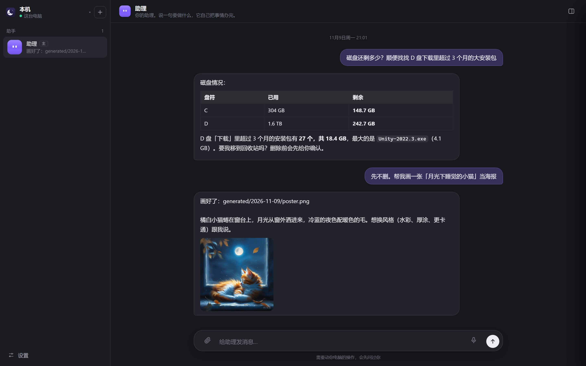
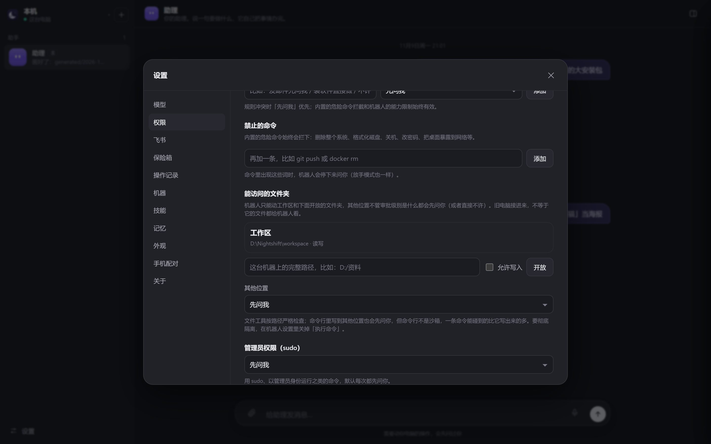
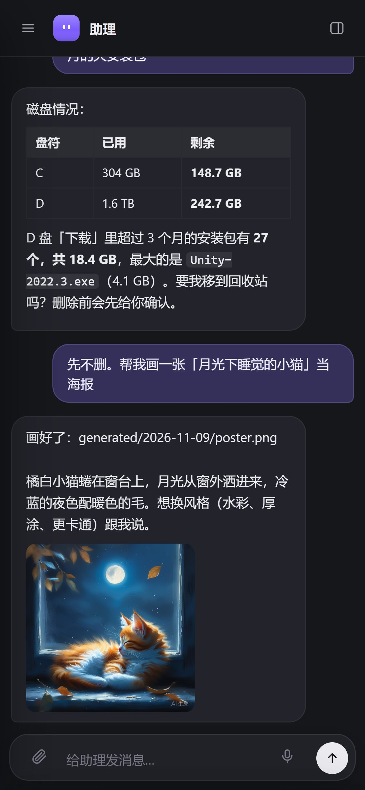

你睡觉，它值夜班
夜班是一个有自己电脑的 AI 助理。说一句要做什么，它就在你的电脑、或者家里闲置的旧电脑和云主机上把事情办完；需要你的时候，它会先问你。

一个助理，把电脑上的事办完
不是只会聊天的机器人：它能执行命令、操作浏览器、读写文件、画图和做视频，做完把结果告诉你。
闲置电脑也能用起来
旧笔记本、家里的台式机、云主机，填上 IP 和账号就自动装好。支持 Ubuntu、Debian、Rocky 和 Windows，新的 Linux 机器半分钟就能用。
看得见，随时接管
每台机器的屏幕都能实时看。遇到扫码、验证码、付款，助理会停下来请你接管，弄好了点一下它接着做。
权限你说了算
每台机器选审批级别；机器人只能碰你开放的文件夹，sudo 默认先问你；还能写一句话规则，比如「发邮件先问我」。
密码不进聊天
需要登录时弹出安全表单，账号密码加密存进那台机器的保险箱，助理直接填进网页，自己看不到，也不会发给 AI 模型。
看图、画图、做视频
发截图它能看懂；让它画海报、做 5 秒短视频，生成好直接显示在聊天里。视频在后台生成，好了会告诉你。
在飞书里找它
出门在外，用手机飞书给助理发消息，结果、图片、视频都发回飞书；需要批准时回一句「批准」就行。
多个助手各干各的
可以建多个助手、拉群分工，每个有自己的记忆和对话，还能给每个单独选模型：简单的活用便宜的，难的用强的。
记忆、技能、定时任务
记住你的习惯；做过的流程存成技能，下次一句话复用；定时任务按点自动跑，你不在也照样干。
模型用你自己的
DeepSeek、通义、Kimi、智谱、豆包、OpenAI、Claude 等 20 家都能接，密钥填你自己的，不经过任何第三方服务器。

放心交给它
旧电脑接进来，不等于它的文件都给机器人看。
- 审批级别：谨慎、标准、放手，每台机器单独设。
- 能访问的文件夹：只有工作区和你开放的文件夹，其他位置先问你。
- 禁止的命令：内置危险命令永远拦下，也能自己加。
- 操作记录：做过什么、谁批准的、何时接管过屏幕，一目了然。
三步开始
几分钟就能用上；添加一台远程机器大约半分钟。
下载安装
下载 Nightshift-Setup 安装版，或者解压即用的免安装版。安装包没有签名，Windows 提示时选「仍要运行」。
填一个模型密钥
打开「设置 → 模型」，选服务商并填上你自己的密钥（推荐 DeepSeek，便宜好用）。可选：填硅基流动密钥，就能用语音、看图、画图。
说一句要做什么
比如「把下载目录里超过三个月的安装包列出来」。想让闲置电脑干活：「设置 → 机器 → 添加机器」，填 IP、账号和密码。
添加远程机器：Linux 需要能 SSH 登录、账号有 sudo；Windows 10/11 需要先在「设置 → 系统 → 可选功能」里装好 OpenSSH 服务器，并用管理员账号。
手机上也能用
在同一个网络里，用手机浏览器打开夜班、输入配对码就能用；在外面，用飞书给助理发消息。
- 需要你的时候会提醒：侧栏的橙色「!」、系统通知、任务栏闪烁。
- 别的机器有事也知道：机器切换器上的角标告诉你哪台在等你。
- 连不上会说：机器关机或断网时，顶部直接提示正在重连。

常见问题
没找到答案，可以到 GitHub 提问。
要钱吗？
夜班本身开源免费。花钱的只有你自己接的模型服务（按用量计费，比如 DeepSeek 日常用每月几块到几十块），以及可选的生图、生视频服务。
我的数据会上传到哪里？
夜班运行在你自己的电脑和机器上，没有我们的服务器。对话发给你自己选的模型服务商；密码存在机器本地的加密保险箱里，不会发给模型。
Windows 提示「已保护你的电脑」怎么办？
安装包还没有做代码签名，所以 SmartScreen 会提示。点「更多信息」→「仍要运行」即可。代码完全公开，可以在 GitHub 上查看。
机器人会不会乱动我的电脑？
在你自己的电脑上，删除文件、执行命令、发消息这类操作默认都会先问你；它只能碰工作区和你开放的文件夹；危险命令（格式化、删系统等）永远拦下。这些都能在「设置 → 权限」里调。
升级会丢数据吗？
不会。直接安装新版即可，机器人、记忆、设置都保留；已经添加的远程机器会自动更新到同一版本。升级前先从托盘退出夜班。
从 GitHub 下载很慢？
可以试试换个时间、开下载工具，或者用免安装版（体积差不多）。以后会提供国内下载地址。